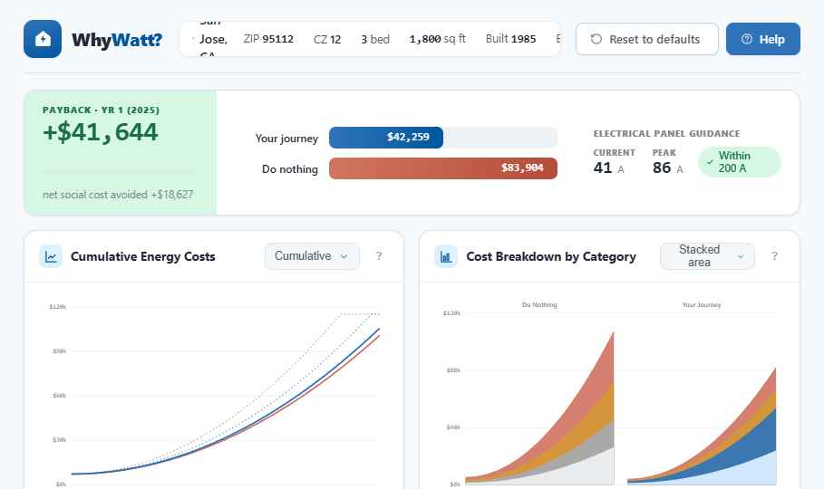
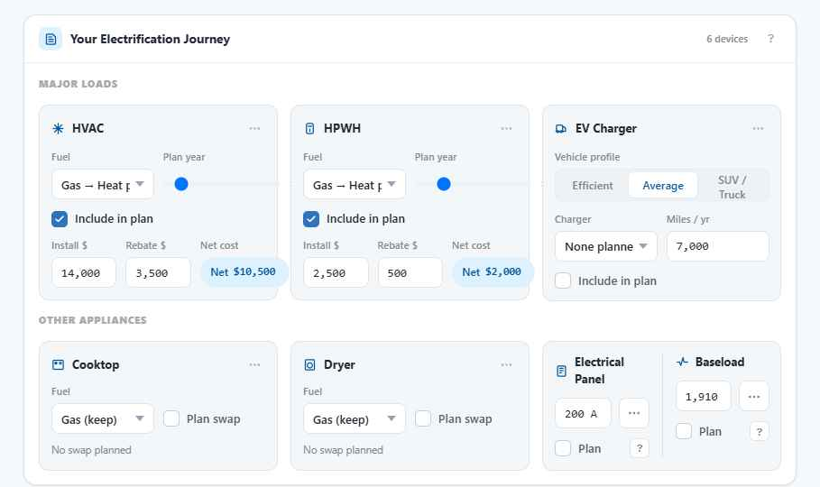
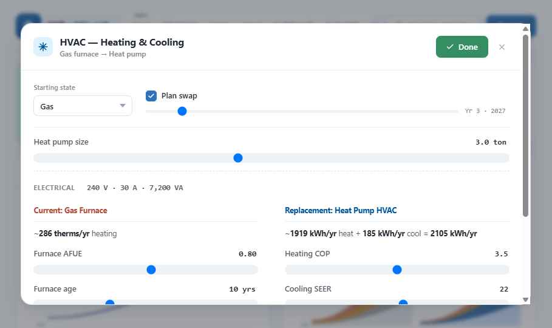
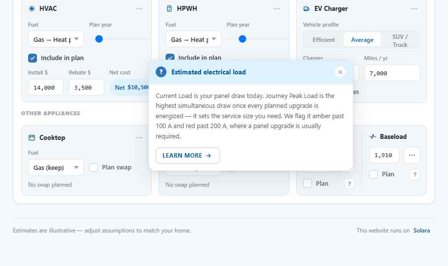

Home Electrification Simulator
A dynamic tool built to help California climate advocates guide homeowners through long-term cost benefits of their electrification journey.
WhyWatt? Purpose Statement
Electrification planning involves balancing capital investments (like heat pump HVACs) against escalating gas and electric rate schedules. WhyWatt? simulates a homeowner's custom timeline, running a parallel "do nothing" baseline to project cumulative operating costs, carbon offsets, and electrical capacity over a 30-year horizon.
Diverging Cost Projection ($k)
Cumulative cash flow projection showing capital investments vs. operating costs
Unified Dashboard Design
All controls, projections, and appliance models are organized in a single responsive canvas to facilitate live coaching.
Click an index above to highlight the dashboard region.


The Technophile Persona
Scenario 1: Swapping appliances sequentially at their natural end-of-life cycles ("replace-on-failure").
Technophiles value cutting-edge specs (e.g., high-efficiency heat pumps) but coordinate installations with failure cycles. WhyWatt? maps this timeline, letting users model specific years for swaps. In this detail view of the HVAC sub-panel:
Select a hotspot
Hover or click on the pulsing hotspots to examine key parameters inside the HVAC configuration editor.

The EV Family Persona
Scenario 2: High electrical loads under strict panel constraints (EV charging + induction cooking).
High-load families add electric vehicles and switch cooktops/dryers to electric. Peak demand accumulates rapidly, making electrical panel capacity critical. WhyWatt? aggregates concurrent demands and guides advocates on whether a 200 A service panel is required, or if smart load coordination avoids a service upgrade.
Select a hotspot
Hover or click on the pulsing hotspots to inspect how electrification slots affect household loads.

How You Can Help
WhyWatt? is an open-source, community-driven simulator. Help us empower community coaches across California.
Project Status
Phase 2 (physics-based appliance math & PG&E tariffs) is complete. We are actively entering user testing and defining goals for Phase 3!
Extend Simulation Features
Contribute to Phase 3 goals: build Monte Carlo uncertainty bands, code income-qualified rebate scales, and enable SCE & SDG&E tariff logic.
View Spec →Audit Utility Rates
Audit PG&E E-1/G-1 rate timelines and CAGR projections. Validate the physics models (UA heat loads, water inlet temperatures) against CEC reports.
Audit Data →Community Coaching
Organize pilot sessions with homeowners. Gather feedback on app navigation clarity, default home assumptions, and visual reports.
Coaches Guide →Refine Documentation
Review and maintain the codebase manuals, engineering docs, design systems, rate loaders specs, and unit testing protocols.
Read Docs →